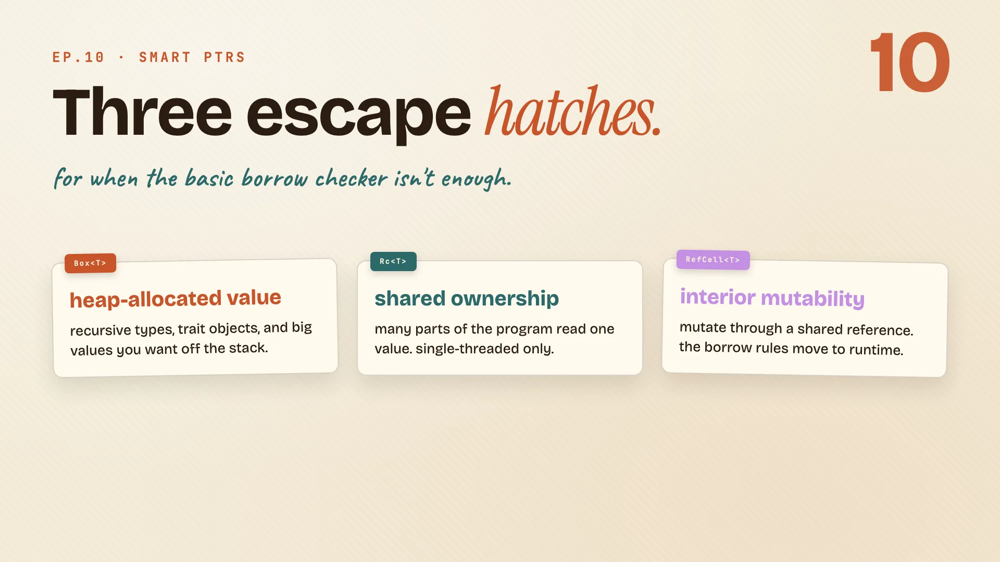
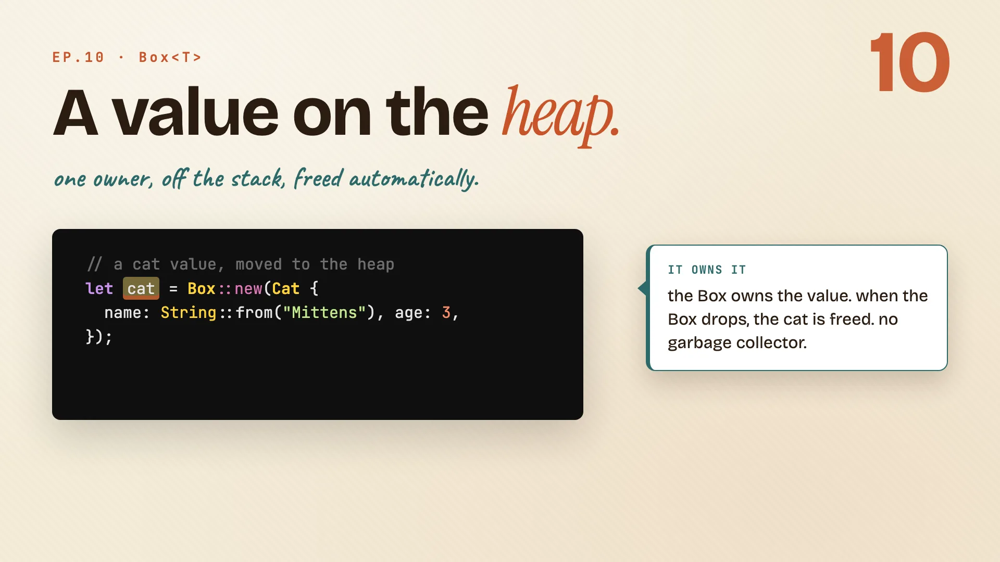
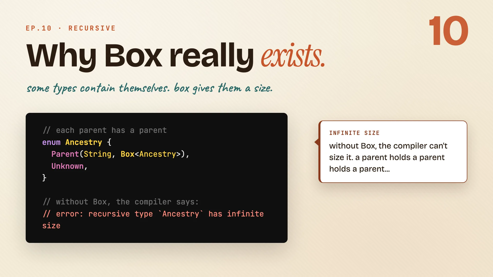
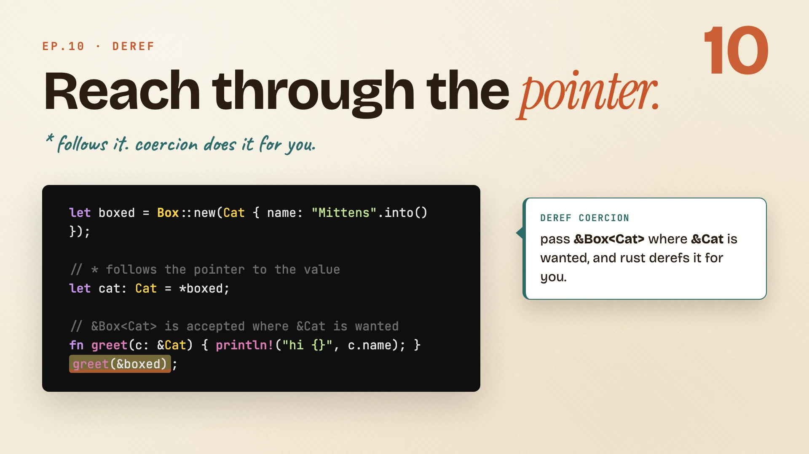
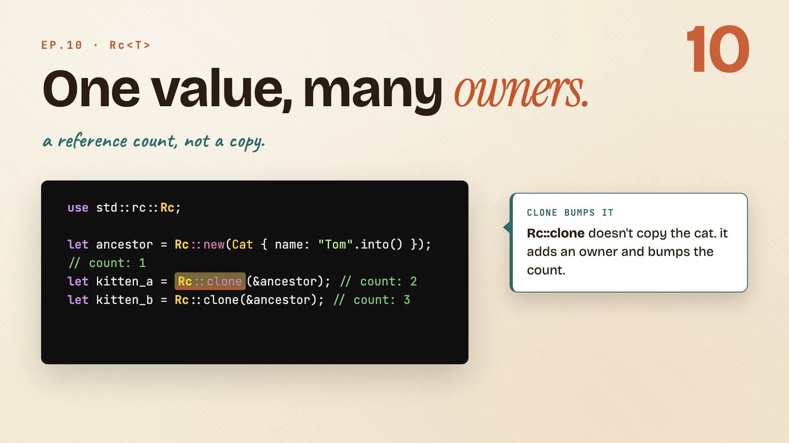
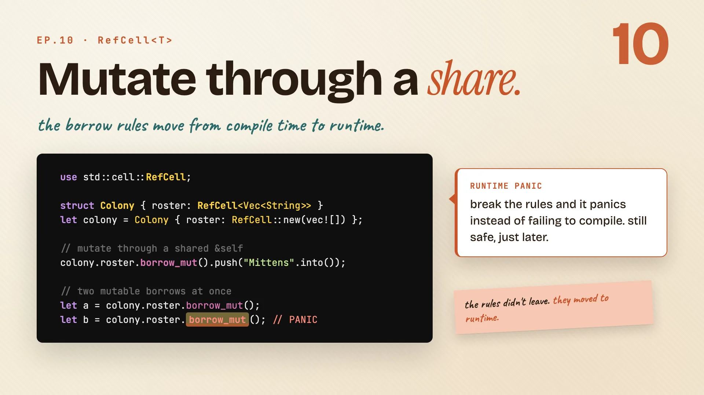
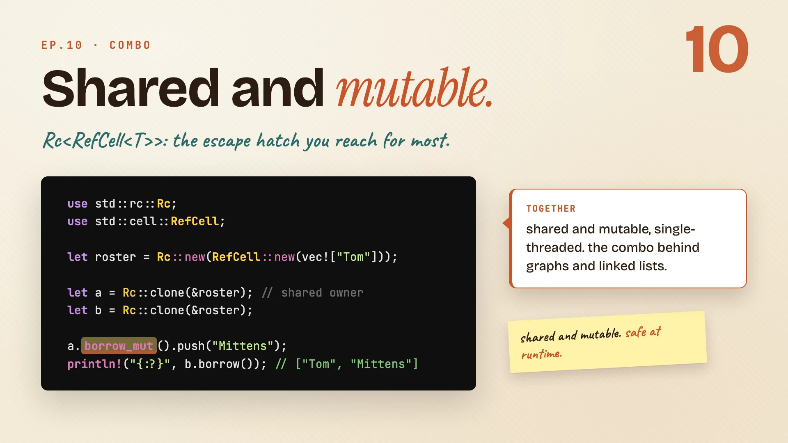
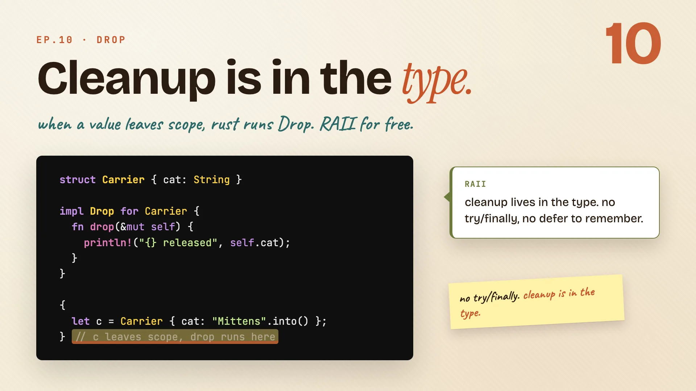
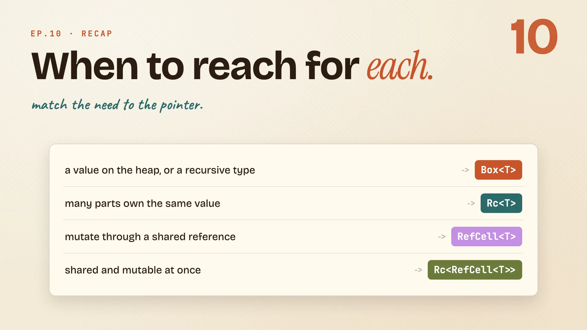

Smart Pointers
owning on the heap, sharing a value, and mutating from the inside.
Why pointers
Book · Ch 15Most of the time the borrow checker is enough. This chapter is about the handful of moments it isn't, and the types you reach for when you need a little more.
Three escape hatches
Smart pointers aren't scary new magic. They're three small tools, and each one hands you a capability the plain borrow checker won't.

Here's the whole family on one card:
| Pointer | What it gives you |
|---|---|
Box<T> |
a heap-allocated value |
Rc<T> |
shared ownership, many owners of one value |
RefCell<T> |
interior mutability, change a value through a shared reference |
Box<T>moves a value onto the heap and owns it.Rc<T>lets many parts of your program own the same value at once.RefCell<T>lets you change a value through a shared reference, checked at runtime.
None of these is free. Each one trades a compile-time check for a capability you needed, and the rest of the chapter is just meeting them one at a time.
Remember: each one trades a check for a capability.
Box<T>
Book · §15.1Start with the simplest one. Box puts a single value on the heap and owns it, and it turns out to be the only way to give a recursive type a size.
Box puts a value on the heap
Box<T> is the simplest smart pointer. You hand it a value, it moves that value onto the heap, and you get back a pointer that owns it.

// a cat value, moved to the heap
let cat = Box::new(Cat {
name: String::from("Mittens"), age: 3,
});
println!("{}", cat.name);
Box::new(...)takes a value and moves it onto the heap.- The box owns it. When
catgoes away, the cat is freed. No garbage collector, no manualfree. - You use it like the value itself.
cat.namereaches right through the box, no unwrapping.
That last line is the whole feel of smart pointers. You hold a pointer, but it reads like you're holding the value.
Remember: box puts one value on the heap and owns it.
Why Box really exists
The heap is nice, but here's the case where Box stops being optional. Picture a cat's ancestry: each parent has a parent, on and on.

// each parent has a parent
enum Ancestry {
Parent(String, Box<Ancestry>),
Unknown,
}
// without Box, the compiler says:
// error: recursive type `Ancestry` has infinite size
Walk through what the compiler is worried about:
- The type contains itself. A
Parentholds anotherAncestry, which can be anotherParent, forever. - Without
Box, it has no size. To lay it out in memory the compiler would have to add up an infinite chain, so it gives up: "recursive type has infinite size." Boxis a pointer of known size. It points at the next link instead of containing it, so the whole type gets a fixed, finite size.
| Size the compiler sees | |
|---|---|
Parent(String, Ancestry) |
infinite, won't compile |
Parent(String, Box<Ancestry>) |
fixed, a string plus one pointer |
Remember: box gives a recursive type a known size.
Deref, and the quiet coercion
You've seen cat.name work straight through a box. Here's the machinery that makes that happen, and one piece of magic that's easy to miss.

let boxed = Box::new(Cat { name: "Mittens".into() });
let cat: Cat = *boxed;
// &Box<Cat> is accepted where &Cat is wanted
fn greet(c: &Cat) { println!("hi {}", c.name); }
greet(&boxed)
*boxedfollows the pointer to the value behind it. The star gives you theCat.- Deref coercion is the quiet part: pass
&boxed(a&Box<Cat>) where a&Catis wanted, and Rust converts it for you. You never wrote a conversion. - That's why everything just works. Methods and references flow right through
Box,Rc, and every other smart pointer, because they all deref to the value inside.
Remember:
*follows the pointer; coercion does it for you.
Rc<T>
Book · §15.4Ownership has been one-owner-at-a-time all series. Rc breaks that rule on purpose: many parts of your program can own the same value at once.
Rc shares one value
Sometimes a single value genuinely belongs to several places. Two kittens, one shared ancestor. Rc<T> lets them all own it, and counts how many do.

use std::rc::Rc;
let ancestor = Rc::new(Cat { name: "Tom".into() }); // count: 1
let kitten_a = Rc::clone(&ancestor); // count: 2
let kitten_b = Rc::clone(&ancestor); // count: 3
// three owners, one cat, freed when the last drops
Rc::new(...)wraps the value and starts a reference count. Right now one owner holds this ancestor.Rc::clone(&ancestor)does not copy the cat. It hands out another owner and bumps the count, to two, then three.- The count is the cleanup rule. When the last owner goes away and the count hits zero, the cat is freed. Shared, with no copies.
A quick note on clone here: it's cheap. You're cloning the pointer and bumping a counter, not duplicating the Cat.
Remember: rc gives many owners; the count frees the value at zero.
RefCell<T>
Book · §15.5Next, mutation. RefCell lets you change a value through a shared reference, by moving the borrow rules from compile time to runtime.
RefCell moves the rules to runtime
The borrow checker normally forbids changing a value through a shared reference. RefCell<T> lets you do exactly that, by checking the same rules later instead of refusing earlier.

use std::cell::RefCell;
struct Colony { roster: RefCell<Vec<String>> }
let colony = Colony { roster: RefCell::new(vec![]) };
colony.roster.borrow_mut().push("Mittens".into());
// two mutable borrows at once
let a = colony.roster.borrow_mut();
let b = colony.roster.borrow_mut(); // PANIC
RefCell<Vec<String>>wraps the roster so you can mutate it through&self.borrow_mut()hands you a mutable reference. The borrow rules are still enforced, just at runtime now.- Break them and it panics. Ask for two mutable borrows at once and the program panics, instead of failing to compile. Still safe, just later.
| Borrow rules checked | Breaking them | |
|---|---|---|
normal &mut |
at compile time | won't compile |
RefCell<T> |
at runtime | panics |
Remember: refcell moves the borrow rules to runtime; break them and it panics.
Combine and drop
Book · §15.5 + §15.3The last two pieces. First the famous combo that stacks sharing and mutation, then Drop, which ties cleanup to the moment a value leaves scope.
Rc<RefCell<T>>, shared and mutable
You have a tool for many owners and a tool for mutating through a share. Stack them and you get the combo you'll reach for most.

use std::rc::Rc;
use std::cell::RefCell;
let roster = Rc::new(RefCell::new(vec!["Tom"]));
let a = Rc::clone(&roster); // shared owner
let b = Rc::clone(&roster);
a.borrow_mut().push("Mittens");
println!("{:?}", b.borrow()); // ["Tom", "Mittens"]
Rcon the outside gives many owners of one roster.RefCellon the inside lets every one of those owners change it through a shared reference.- Together: one cat pushes a name through
a, andbsees it. Shared and mutable, single-threaded. This is where graphs and trees live.
Remember: rc<refcell<t>> is shared plus mutable, single-threaded.
Drop puts cleanup in the type
Smart pointers free their value automatically. Drop is the trait that makes that happen, and you can use it on your own types too.

struct Carrier { cat: String }
impl Drop for Carrier {
fn drop(&mut self) {
println!("{} released", self.cat);
}
}
{
let c = Carrier { cat: "Mittens".into() };
} // c leaves scope, drop runs here
- The
Droptrait lets a type say what should happen when it's cleaned up. - You never call
dropyourself. Rust runs it for you the moment the value leaves scope. - So cleanup is in the type. The carrier releases its cat automatically. No
try/finally, nodefer, the cleanup is tied to scope. (This is the idea other languages call RAII.)
Remember: drop runs at scope exit; you never call it yourself.
When to reach for each
Here's the whole chapter on one card. You don't memorize these, you match the need to the pointer.

| When you need | Reach for |
|---|---|
| a value on the heap, or a recursive type | Box<T> |
| many parts to own the same value | Rc<T> |
| to mutate through a shared reference | RefCell<T> |
| both sharing and mutation at once | Rc<RefCell<T>> |
Box<T>for the heap and for recursive types.Rc<T>when many owners need the same value.RefCell<T>when you need to change something through a shared reference.Rc<RefCell<T>>when you need both, the combo that does the most work.
Remember: match the need to the pointer.
The whole episode in one line:
Not one pointer. The right pointer. Box, Rc, RefCell, and knowing when to reach for each.
Cheatsheet recap
One line per idea, in order. Skim this when you just need the reminder.
| Idea | Remember |
|---|---|
| Three escape hatches | each one trades a check for a capability. |
| Box puts a value on the heap | box puts one value on the heap and owns it. |
| Why Box really exists | box gives a recursive type a known size. |
| Deref, and the quiet coercion | * follows the pointer; coercion does it for you. |
| Rc shares one value | rc gives many owners; the count frees the value at zero. |
| RefCell moves the rules to runtime | refcell moves the borrow rules to runtime; break them and it panics. |
| Rc<RefCell<T>>, shared and mutable | rc<refcell<t>> is shared plus mutable, single-threaded. |
| Drop puts cleanup in the type | drop runs at scope exit; you never call it yourself. |
| When to reach for each | match the need to the pointer. |
Practice: Rustlings
19_smart_pointers.